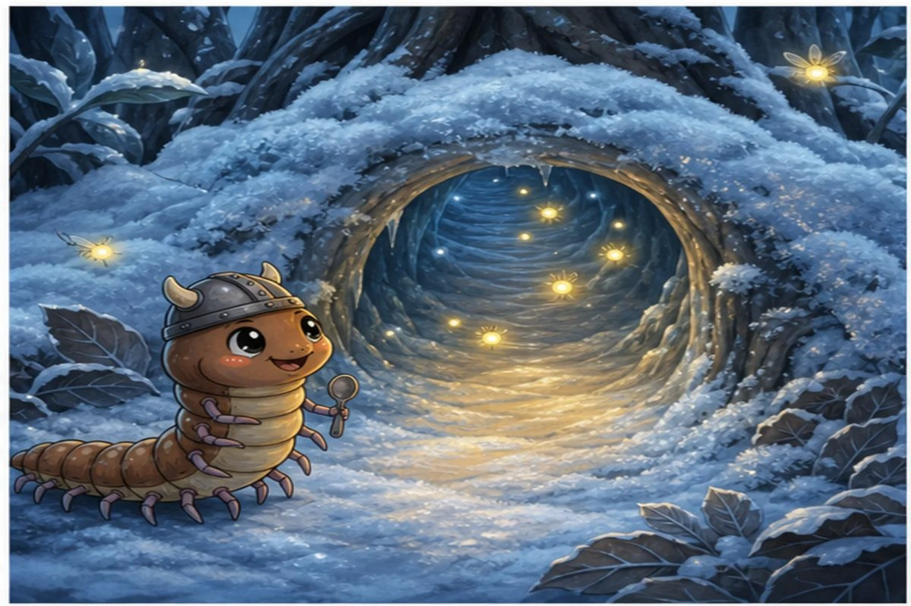
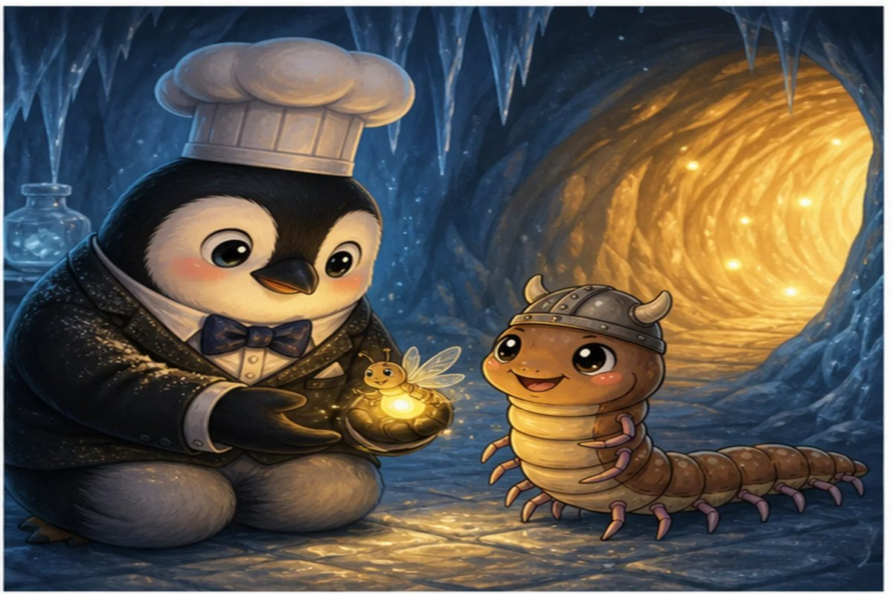
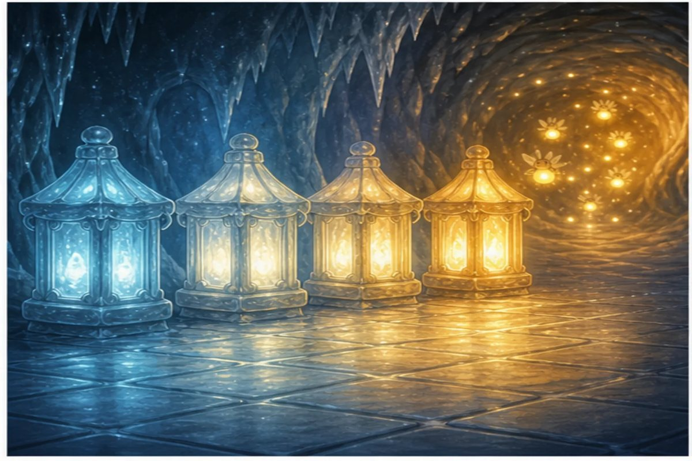
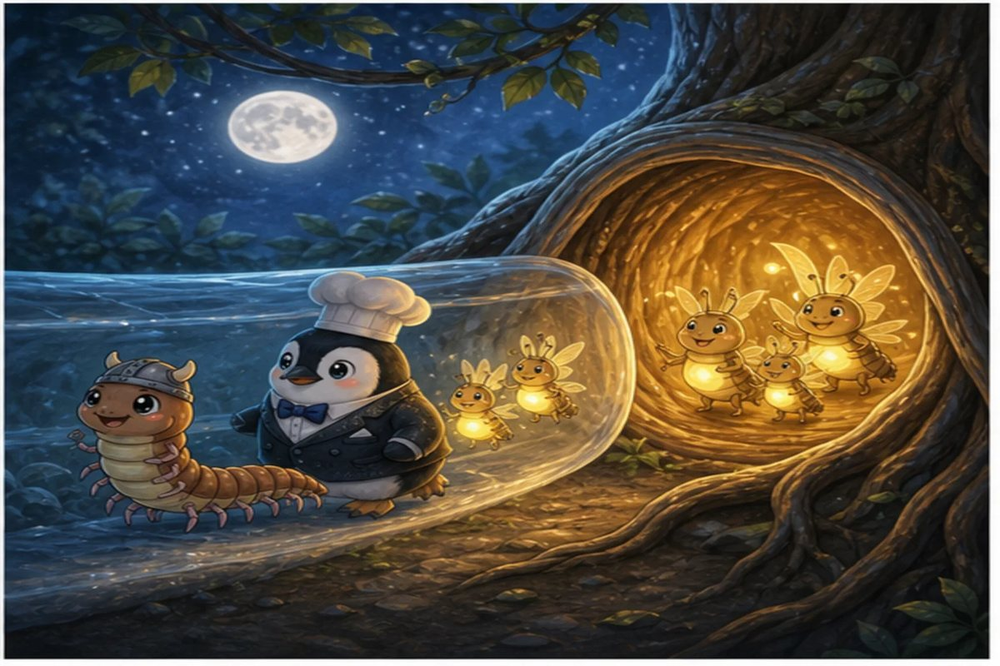

6 printed pages · 1.0 MB · A4 or US Letter. Download PDF · Open PDF to printOpens in a new tab. Use the PDF viewer's Print control. To use less ink, read online and choose only the questions on page 6 in Print.

Page 1 of 4 · Seven Steps Colder
Centi-Peed finds a frosted burrow beneath the roots. The entrance marker reads 3°C, but tiny firefly footprints descend seven degree-steps. “Below zero is still somewhere,” Sub-Zero says, drawing a glowing number line through the air.
Try it: What temperature is 7 degrees below 3°C?
−10
−4
4
10
Show the answer
−4. Count down seven steps from 3: 2, 1, 0, −1, −2, −3, −4.

Page 2 of 4 · Warm Light Ahead
At −6°C, Centi-Peed spots a warm gold shimmer farther up the tunnel. The next marker reads 2°C. Instead of fearing the minus sign, Centi counts every step through zero while Sub-Zero shelters the smallest firefly from the wind.
Try it: How many degrees warmer is 2°C than −6°C?
4
6
8
12
Show the answer
8. Move 6 degrees from −6 to 0, then 2 more to reach 2. The total change is 8 degrees.

Page 3 of 4 · The Lantern Sequence
Four ice lanterns show −8, −4, 0, and 4. Each brighter lantern is four steps warmer than the last. Centi-Peed follows the pattern rather than guessing, and the missing fireflies answer with a cheerful flash.
Try it: What number comes next: −8, −4, 0, 4, ...?
6
8
10
12
Show the answer
8. The sequence increases by 4 each time. Add 4 to 4 to get 8.

Page 4 of 4 · Along Before Up
The return map marks the firefly nest at (−2, 1). A clear tunnel runs four grid steps to the right and stays at the same height. Centi-Peed leads this time, reading along the x-axis first. Every firefly reaches the moonlit roots safely.
Try it: Starting at x = −2, what is the new x-coordinate after moving 4 steps right?
−6
−2
2
4
Show the answer
2. Moving right adds 4 to x: −2 + 4 = 2. The y-coordinate stays unchanged.
The end · Great maths
Four questions, one story.
Try the story again without peeking, or print it and work the questions on paper. SnackPack Basic Math has the rest of the story shelf, daily practice and number games.